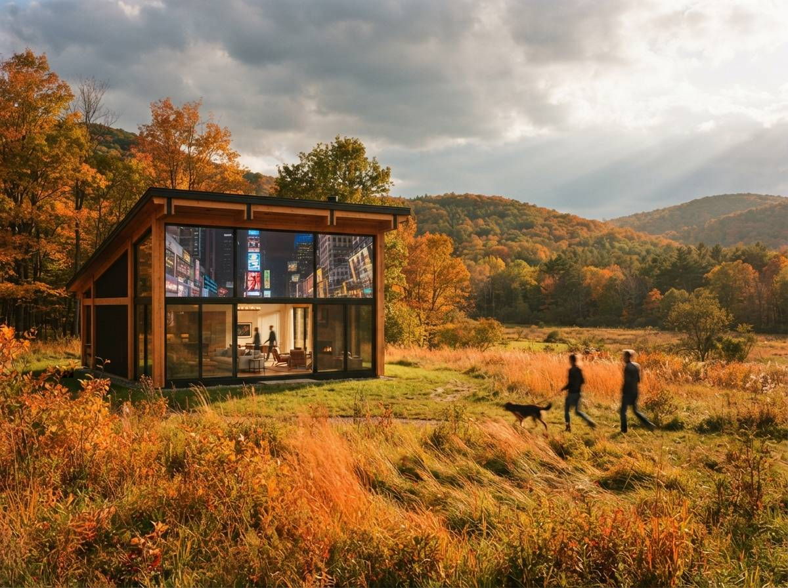

This sits in the same family of complaints that filled the archviz and Flux threads this week, the ones asking for a pass that adds lighting, textures and reflections to a finished render without wrecking the building underneath. Lighting and texture get most of the attention. Reflections get the least, and they are the part most likely to embarrass you in front of a planning panel, because a wrong reflection is not a vague off feeling. It is a specific, checkable claim about the site that happens to be untrue.
The cause is the same one behind every other AI render tell, and it is worth saying flatly. The model does not trace reflections. It paints them. A real renderer follows rays out from the glass, bounces them off whatever is actually in the scene, and brings back the true surroundings. A diffusion model has no scene to bounce off. It has only a learned habit: glass usually looks like this. And in the images it learned from, glass usually means a downtown tower at sunset, so that is what it reaches for, whatever your site actually is.

The three ways reflections go wrong
They fail in three distinct ways, and naming them is half the cure, because each one has a different fix and you will usually have more than one in the same frame.
1. Invented context
This is the headline failure. The glass reflects a skyline, a row of trees, a body of water that is nowhere near the project. It is most damaging on exactly the projects where context matters most: a sensitive infill, a conservation-area frontage, a rural house where the whole argument is how the building sits in an empty field. The AI reflects a generic city into the windows of a barn, and the image now contradicts the planning case it was meant to support.
2. Wrong reflectivity
The model defaults to mirror. Bright, total, chrome. Real vision glass is only partly reflective, and the rest of it is transparent, showing the floor plates, the mullions, the lit interior behind. That partial transparency is what makes a facade read as a building rather than a polished object. When the AI cranks the glass to full mirror it flattens the elevation into a single shining plane, and any distinction you designed between vision glass and spandrel panels disappears into one bright sheet.
3. Inconsistency across the set
Generate the corner from three angles and the same glazed stair will reflect three unrelated skies and three different invented streets. Each image painted its reflections independently, so they do not agree. A single hero shot can hide this. A board of elevations and perspectives cannot, and the moment two views of the same glass disagree about what is opposite it, the set stops reading as one consistent building.
Make the glass show what is actually there
The fix follows the same hierarchy as every other careful render job. Stand on the highest rung you can still reach with the assets you have, and in every case the principle is identical: stop letting the model guess the reflected world, and feed it the real one.
Render the reflection, then style it
If you still hold the 3D model, this is not an AI problem at all. Build the real surroundings as simple massing, even grey boxes for the neighbours, wrap the scene in an HDRI that matches the actual sky condition you want, and render a reflection or environment pass. Now the glass mirrors the true context, the dull sky and the low brick building opposite, because it is tracing a scene that contains them. Let the AI styling sit on top at low denoise. The reflection is correct before the model ever touches it, and the model is only allowed to make it prettier, not to invent it.
Mask the glazing and pass it alone
When all you have is the flat image, the move is to treat the glass as its own region. Mask the glazing, run a separate image-to-image pass on that selection only, keep the denoise low, roughly 0.3, and feed a structure control so the mullion grid and frame edges hold. Then write a prompt that describes the reflected content exactly, "reflecting an overcast grey sky and a low brick terrace opposite, faint warm interior visible through the glass." You are not asking the whole frame for reflections. You are telling one masked region precisely what to show. Everything outside the mask, the brick, the roof, the street, stays untouched.
| Reflection route | Context fidelity | When it wins |
|---|---|---|
| Reflection pass against site HDRI | True, the real surroundings are traced | You kept the model and the context matters to the case. |
| Masked glass, controlled pass | Good, you dictate exactly what reflects | Flat image, glazing is a clean region to select. |
| Whole-frame "reflective glass" prompt | None, it paints a stock skyline | Never on a real site. Fine only for an abstract mood frame. |
Hold the brightness, check the tells
Two disciplines turn a passable reflection into one that survives scrutiny, and both are about restraint rather than effort.
Specify the reflectivity, do not accept the default. Tell the model the glass is vision glazing with the interior faintly visible, not a mirror. Ask for the floor plates and mullions to read through it. A facade that shows a little of its own inside is doing the one thing a chrome sheet cannot, which is convincing a viewer that there is a building behind the glass and not just a rendered surface.
Then check the reflection against everything else in the frame. This is the QA step almost nobody runs, and it catches the failures the eye glosses over. Does the reflected sky match the sky you used for the rest of the render? A dusk view with a bright noon-blue reflection in the windows is a giveaway that the glass was painted separately and never reconciled. Does the reflected context actually exist on the site? Are the reflections consistent from view to view across the set? Three questions, thirty seconds, and they separate a render that holds up at the meeting from one that gets quietly doubted.
There is a wider point hiding in all this, and it is mostly about taste. The mirror-glass tower throwing back a golden skyline is the single most over-produced cliché in AI archviz, precisely because it is the model's path of least resistance. It looks premium and says nothing true. A client or a planner who knows the corner will trust the duller, accurate image far more than the sparkling one, because the accurate glass tells them you actually looked at the site. Restraint reads as competence. The fiction reads as a render that is hiding something.
A reflection is a claim about the site. Paint it instead of tracing it and you have put a city that does not exist into a window and asked the client to believe it.
So before you admire the shine, look at what the glass is showing you. If it is reflecting a world that is not on the site, the render is lying in the most checkable way an image can. Feed it the real context, hold the glass to the brightness real glass has, and check the windows against the sky and the street they are supposed to be standing in. Get that right and the reflection stops being the part that gives the render away and becomes the part that proves you were paying attention.
Drawn from this week's intel sweep of 2026 architectural visualization coverage, where community threads on r/FluxAI and r/comfyui kept returning to the same enhancement requests on finished renders, lighting, textures and reflections, while keeping the original geometry intact. ArchiGen AI runs no sponsored placements and has no affiliate relationship with any tool named here.